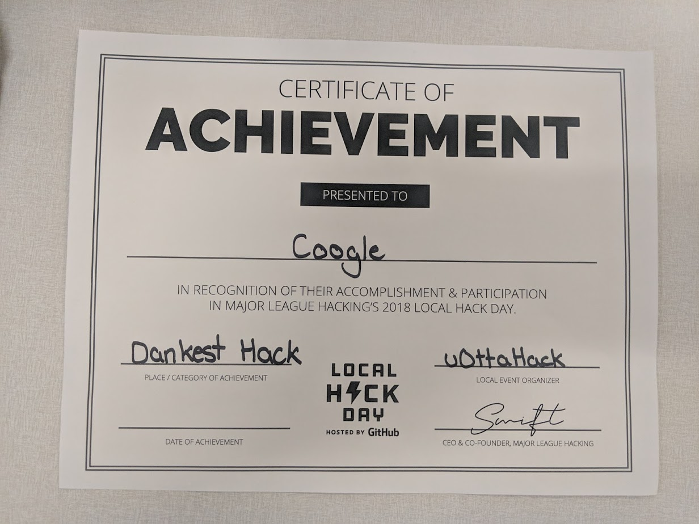

Everyone knows XKCD. Amazing comic. But what if you want to find one of their comics. Then things get harder. So that's why we invented this garbage fire of a program. I mean amazing and flawless and not hacked together what so ever. Well it was conceived and made in a 12 hour hackathon so it's excusable. We actually won dankest hack which I'm pretty happy about not going to lie. Check out the neat piece of paper we won.
Don't ask me why the project name is Coogle. It's basically Google but for comics which starts with a c so replace the G in Google and bam Coogle.